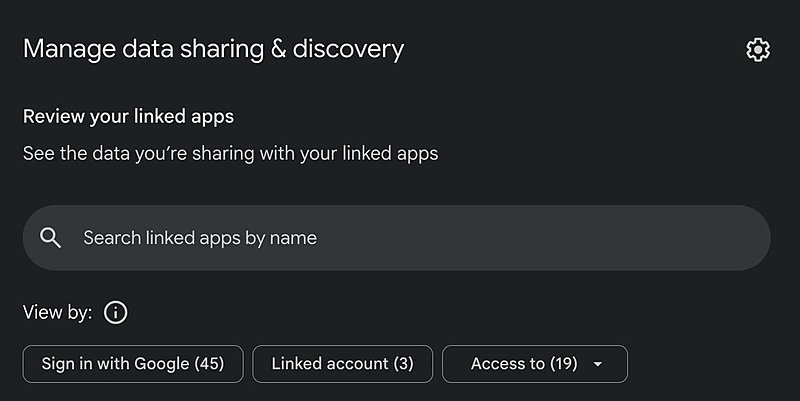

AI 日报 · 10月19日
代理越能行动，权限与验证越要清楚
Anthropic 公布公共利益基金和外部评估进展，Cursor 开放云端环境管理接口，OpenAI 为学术实验室提供有条件的 Rosalind 使用计划。Builder 同时讨论模型选择、账号授权和跨代理协作；能力扩张后，谁能访问、谁来复核，需要逐项写明。
权限边界
外部评估
模型选择
科研验证
4
Builder 动态
4
今日上榜项目
4
官方原始来源
1
公开视频
今日要点
Anthropic 将公共利益承诺写进股权安排
10 月 18 日公告提出把公司 5% 股份投入新设公共利益基金，但以股东批准为前提；估值每超出基准 50%，董事会还可酌情增加 2%。后续治理与估值门槛尚待披露，不能把全部比例写成已生效。
外部评估需要实际访问和发表权
Anthropic 称已让 6 名 METR 成员获得接近内部风险评估团队的工具和系统访问，并描述三个逐级开放的评估层级。客户数据等类别被排除，删节类别仍由 Anthropic 判断；这是其公布的安排，独立报告尚需持续跟进。
深度对话
Ian Quigley：让科研 Agent 接受实验检验
Latent Space 10 月 14 日访问 Leash Bio 联合创始人 Ian Quigley。节目与配套文字讨论 DNA 编码化合物库、数据偏差和可验证的实验循环；以下为受访团队的方法与观察，不等同于独立疗效结论。
先排除实验伪信号
团队给化合物加入多重条码，试图区分蛋白质与 DNA 结合造成的假信号；可重复的数据比单纯增加样本量更重要。
检验模型是否学到了捷径
节目指出模型可能借化合物结构猜测设计者，或记住蛋白质的特定标识；跨化学库测试和蛋白质突变实验用于检查泛化能力。
把实验循环变成可验证任务
团队设想用已有实验数据构造大量模拟研究任务，让 Agent 提出假设并接受结果反馈；这仍是研究路线，需要真实实验验证。
资讯精选
官方原文与 RSS 更新
OpenAI｜Rosalind 学术计划开放申请
合资格实验室可获最多 30 个 Business Standard 席位、最长 12 个月；GPT-Rosalind 另须通过受信访问审批。
Builder 动态
从默认模型到账号授权
Amjad Masad｜澄清 Replit 的模型选择
Replit CEO 解释，OpenAI 是 Agent 的优先合作方，并不意味着产品停止支持 Anthropic 等模型；用户仍可选择多种模型。默认体验与用户选择是两个不同层面。
Peter Yang｜先审计连接，再决定断开
Peter 分享自己检查 Google 账号所连应用与 Agent 的提示词：区分登录权限与 Gmail、Drive 等数据访问，逐项询问用途，并在明确批准后才移除连接。配图中的 45 是其个人账号的应用数量，不代表普遍水平。

Thibault Sottiaux｜演示跨代理的资料交接
OpenAI 产品负责人称自己的工作与个人 Agent 经邮件协调，随后与会计师对接税务资料，过程用时约 20 分钟。这是个人体验，原帖没有给出可复用的权限与审计配置。
Aaron Levie｜工程工作的对象可能增加
Box CEO 认为，Agent 使更多原本难以数字化的流程变成软件问题，工程理解力因此更重要。这是他对工作形态的判断，不能据此推断就业数量。
GitHub Trending
今日榜单的四个项目


按 10 月 19 日 GitHub Trending 实时榜单筛选，避开前两期重点项目；星标、分叉和语言取自当次 GitHub API 快照，随后会变化。功能描述来自仓库自述。
今日思考
今天的材料从个人账号、产品平台延伸到实验室和模型公司：选择模型之前要知道默认值与替代项，连接工具之前要看数据访问范围，接受研究结果之前要检查实验或外部评估是否能推翻它。今日一问：你的 Agent 现在能调用哪些工具、看见哪些数据；这些权限由谁定期复查？
参考来源
Anthropic｜公共利益基金
Anthropic｜外部评估安排
Cursor｜云端环境更新
OpenAI｜Rosalind 学术计划
AIGC Weekly｜第 41 周周刊
Latent Space｜Ian Quigley 访谈原文
Latent Space｜Ian Quigley 原频道视频
Amjad Masad｜模型选择
Peter Yang｜账号授权审计
Thibault Sottiaux｜跨代理交接
Aaron Levie｜工程工作
GitHub｜10 月 19 日 Trending
anthropics/claude-plugins-official
cursor/plugins
anomalyco/opencode
HKUDS/CLI-Anything